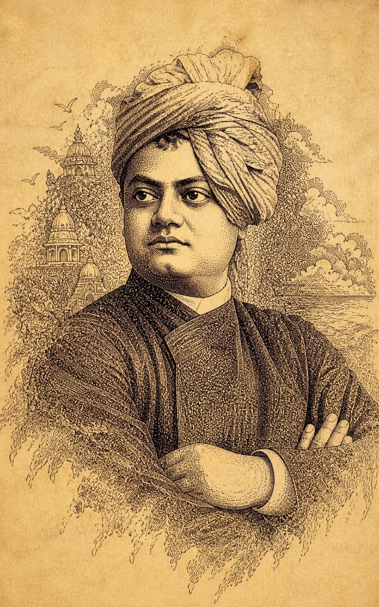
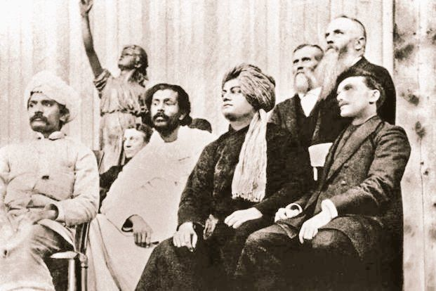

Who Was Swami Vivekananda?
Swami Vivekananda (1863–1902), born Narendranath Datta, was an Indian monk, philosopher, religious teacher, and influential interpreter of Vedanta. He became one of the best-known figures associated with the presentation of Indian philosophical and religious ideas to audiences in the West.
Vivekananda was a major disciple of Sri Ramakrishna. His intellectual and spiritual development brought together ideas drawn from Vedanta, Yoga, the Upanishadic tradition, and his own interpretation of religion and human potential.
He became internationally famous after addressing the World's Parliament of Religions in Chicago in 1893. His subsequent lectures in the United States and Europe helped introduce Vedanta and Yoga to wider Western audiences.
Swami Vivekananda: Quick Facts
- Birth name — Narendranath Datta
- Born — 12 January 1863
- Birthplace — Calcutta, British India
- Died — 4 July 1902
- Tradition — Vedanta and Hindu philosophical thought
- Teacher — Sri Ramakrishna
- Known for — Vedanta, Yoga, religious philosophy, spiritual thought, education, and service
- Internationally known for — His addresses at the World's Parliament of Religions in Chicago in 1893
- Major works — Raja Yoga, Karma Yoga, Jnana Yoga, and Bhakti Yoga
- Major institution associated with him — Ramakrishna Math and Ramakrishna Mission
Swami Vivekananda's Early Life and Education

Narendranath Datta was born in Calcutta on 12 January 1863. He grew up in a family with an interest in education, culture, religion, and intellectual discussion.
As a young man, Narendranath studied Western philosophy and became interested in questions concerning God, religion, reason, and spiritual experience. He was associated for a period with the Brahmo movement, which emphasized religious reform and rejected some traditional practices.
His encounter with Sri Ramakrishna became a decisive event in his intellectual and spiritual life. Under Ramakrishna's influence, Narendranath increasingly explored Vedanta, religious experience, meditation, and the possibility of realizing spiritual truth directly.
Swami Vivekananda and Sri Ramakrishna
Sri Ramakrishna was one of the most important influences on Vivekananda's philosophical and spiritual development. Their relationship began when Narendranath was searching for answers to questions about religious experience and the existence of God.
Ramakrishna's emphasis on direct spiritual experience became particularly important to Vivekananda. After Ramakrishna's death in 1886, Vivekananda and a group of his fellow disciples eventually formed a monastic community.
Vivekananda later developed and presented his own interpretation of Vedanta and religious universality to audiences in India and abroad. His work therefore connects the spiritual legacy of Ramakrishna with modern discussions of religion, philosophy, and human development.
What Was Swami Vivekananda's Philosophy?
Swami Vivekananda's philosophy was strongly influenced by Vedanta, especially the Upanishadic understanding of the deeper unity of existence. He presented Vedanta as a philosophy capable of addressing both spiritual experience and questions about human nature.
A central theme in Vivekananda's thought is the idea that human beings possess a deeper spiritual nature. He connected this idea with the Vedantic understanding of the Atman, the Self, and its relationship to ultimate reality.
Vivekananda also emphasized that philosophy should not remain merely theoretical. Spiritual ideas, in his view, should have practical consequences for human life. This helped shape his emphasis on strength, character, self-discipline, service, education, and spiritual realization.
Swami Vivekananda and Vedanta Philosophy

Vedanta became one of the central philosophical frameworks through which Vivekananda interpreted religion and human existence. Vedanta draws heavily on the Upanishads, the Bhagavad Gita, and the Brahma Sutras.
Vivekananda frequently emphasized the idea that the deepest nature of the human being is spiritual. He interpreted the Upanishadic conception of the Self as pointing beyond the limited identification of human beings with the body and ordinary mental states.
Vivekananda's presentation of Vedanta was also intended to be practical. Rather than treating philosophy as an abstract intellectual system, he connected Vedanta with spiritual practice, ethical action, meditation, devotion, knowledge, and service.
What Is Practical Vedanta According to Vivekananda?
One of the distinctive features of Vivekananda's thought is his emphasis on Practical Vedanta. He sought to connect Vedantic ideas about the unity and spiritual nature of existence with everyday human conduct.
In this approach, recognizing spiritual unity should influence how people treat one another. Service, compassion, self-discipline, and work can therefore become expressions of spiritual understanding.
Practical Vedanta helped Vivekananda connect philosophical ideas with social and ethical concerns. His interpretation of spirituality was therefore not limited to meditation or private religious experience.
Swami Vivekananda and the Philosophy of Yoga
Yoga was another major component of Vivekananda's philosophical teaching. He presented Yoga as a systematic approach to spiritual development and self-realization.
His writings and lectures discussed several traditional approaches to spiritual practice, including Raja Yoga, Karma Yoga, Jnana Yoga, and Bhakti Yoga.
Vivekananda's presentation of Yoga was broader than the modern association of yoga primarily with physical postures. His discussions emphasized meditation, concentration, ethical discipline, knowledge, devotion, and spiritual realization.
What Are the Four Yogas in Vivekananda's Philosophy?
Raja Yoga
Raja Yoga emphasizes the disciplined training of the mind, concentration, meditation, and the development of higher states of consciousness. Vivekananda's presentation draws substantially on the classical Yoga tradition associated with Patanjali.
Karma Yoga
Karma Yoga is the path of action. Vivekananda presented selfless work as a means of spiritual development when action is performed without attachment to personal reward.
Jnana Yoga
Jnana Yoga is the path of knowledge. It involves philosophical inquiry into the nature of the Self, reality, and ignorance.
Bhakti Yoga
Bhakti Yoga is the path of devotion. Vivekananda explored devotion to the divine as a genuine path toward spiritual realization.
Swami Vivekananda's Chicago Speech of 1893

One of the defining events in Vivekananda's public life was his participation in the World's Parliament of Religions in Chicago in September 1893.
His opening address at the Parliament began with the famous greeting "Sisters and brothers of America." The speech presented themes of religious tolerance, acceptance, and the contribution of Indian religious thought to discussions of religion.
Vivekananda's appearances at the Parliament helped establish him as an important representative of Indian religious and philosophical thought to Western audiences.
Vivekananda's Philosophy of Religion and Religious Unity
Vivekananda argued that religious traditions could represent different approaches to spiritual truth. His presentation of Vedanta emphasized tolerance and the possibility of recognizing value in different religious paths.
His philosophy did not simply argue that all religions were identical. Instead, he emphasized a broader spiritual unity while recognizing differences in religious traditions and practices.
This approach became one of the most recognizable features of Vivekananda's public teaching and contributed to his reputation as an important figure in the history of interreligious dialogue.
Vivekananda's Ideas About the Self and Human Potential
Vivekananda's understanding of human nature was closely connected with Vedanta. He emphasized that human beings should not be understood only as physical organisms or limited personalities.
The concept of the Atman, or Self, played an important role in this perspective. Vivekananda presented the deeper Self as spiritual rather than merely physical or psychological.
This understanding led him to emphasize human dignity, self-mastery, courage, and the possibility of spiritual realization. His philosophy therefore placed considerable importance on developing character and realizing one's deeper nature.
Swami Vivekananda on Service, Ethics, and Humanity
Service became a major practical expression of Vivekananda's philosophy. His understanding of spiritual unity encouraged an approach to human relationships based on compassion and responsibility rather than narrow self-interest.
Vivekananda's thought connected spiritual development with action in the world. This is particularly visible in his interpretation of Karma Yoga, in which work can become a spiritual discipline when performed without selfish attachment.
His emphasis on service later became an important part of the institutional work associated with the Ramakrishna Mission.
Swami Vivekananda's Philosophy of Education
Vivekananda regarded education as important for the development of character and human potential. He did not view education simply as the accumulation of information.
His educational thought emphasized the development of strength, confidence, discipline, character, and the ability to realize one's own capacities.
This emphasis on character formation is connected with his broader philosophical view that education should help individuals become capable, self-directed, and aware of their deeper potential.
Why Did Vivekananda Emphasize Strength and Character?
Strength is a recurring theme in Vivekananda's teachings. He regarded weakness, fear, and lack of confidence as obstacles to personal and spiritual development.
His emphasis on strength should be understood within his broader philosophical framework. For Vivekananda, spiritual realization was not intended to produce passivity or indifference toward life.
Instead, he connected spiritual awareness with courage, disciplined action, self-control, and service to others.
Swami Vivekananda's Ideas About India
Vivekananda strongly emphasized the intellectual and spiritual traditions of India. He regarded Indian philosophical traditions, especially Vedanta, as important contributions to humanity's wider search for spiritual knowledge.
At the same time, his thought included strong concern for the social and educational condition of Indian society. He emphasized the need for education, strength, organization, and service.
His interpretation of Indian philosophy therefore combined spiritual thought with a strong concern for human development and social responsibility.
Swami Vivekananda's Influence in the West
After the Chicago Parliament of Religions, Vivekananda spent several years teaching and lecturing in the United States and Europe. His lectures introduced many Western audiences to his interpretation of Vedanta and Yoga.
His Western teaching contributed to the development of Vedanta societies and institutions that continued to present Indian philosophical ideas outside India.
His influence is therefore significant not only within modern Indian intellectual history but also within the history of the transmission of Indian religious and philosophical ideas to the modern West.
Books and Major Works of Swami Vivekananda
Vivekananda's writings and lectures were later collected in the Complete Works of Swami Vivekananda. These volumes contain lectures, speeches, letters, essays, conversations, poems, and other writings.
Raja Yoga
Raja Yoga presents Vivekananda's interpretation of Yoga, especially meditation, concentration, mental discipline, and spiritual realization.
Karma Yoga
Karma Yoga explains the philosophical significance of action and selfless work.
Jnana Yoga
Jnana Yoga explores the path of knowledge and philosophical inquiry into the Self and ultimate reality.
Bhakti Yoga
Bhakti Yoga examines devotion as a path of spiritual realization.
Chicago Addresses
His addresses at the World's Parliament of Religions in Chicago in 1893 are among his most historically significant public speeches.
Swami Vivekananda and the Ramakrishna Mission
Vivekananda established the Ramakrishna Mission in 1897. The organization developed a model of combining spiritual life with organized service.
Its activities have included education, healthcare, relief work, and other forms of social service alongside the teaching and practice of Vedanta.
The institutional legacy of Vivekananda is therefore closely connected with his philosophical idea that spiritual life should be expressed through practical work and service to humanity.
Swami Vivekananda's Main Philosophical Ideas
Vivekananda's thought contains several interconnected themes that help explain his importance in modern Indian philosophy and religious thought.
Vedanta and the Spiritual Nature of Humanity
Vivekananda emphasized the spiritual dimension of human existence and interpreted Vedanta as a philosophy of the deeper Self.
Practical Spirituality
He argued that spiritual ideas should influence practical life, conduct, work, and relationships.
Yoga as a Path to Realization
Vivekananda presented different forms of Yoga as disciplined paths toward spiritual development.
Religious Tolerance and Unity
He emphasized the possibility of recognizing truth and value across different religious traditions.
Service to Humanity
Service became an important practical expression of his understanding of spiritual unity.
Education and Character
Vivekananda emphasized education as a means of developing character, confidence, strength, and human potential.
What Is Historically Certain About Vivekananda?
Vivekananda left a substantial body of lectures, writings, letters, and recorded recollections, making his intellectual legacy much more directly documented than that of many ancient philosophers.
Well-Documented
- Vivekananda was born as Narendranath Datta in Calcutta in 1863.
- He became a disciple of Sri Ramakrishna.
- He participated in the World's Parliament of Religions in Chicago in 1893.
- He later lectured extensively in the United States and Europe.
- His writings include works on Raja Yoga, Karma Yoga, Jnana Yoga, and Bhakti Yoga.
- He established the Ramakrishna Mission in 1897.
Important Interpretive Considerations
- Vivekananda's presentation of Vedanta should be understood as his modern interpretation of a much older philosophical tradition.
- His teachings combine philosophical, religious, ethical, and practical concerns rather than forming a narrowly academic system.
- Popular quotations attributed to Vivekananda should be checked against his actual writings or documented speeches before being treated as authentic.
Vivekananda's Famous Chicago Address
“Sisters and brothers of America.”
Why Is Swami Vivekananda Important Today?
Swami Vivekananda remains an important figure in the history of modern Indian philosophy because he presented Vedanta and Yoga in forms that could engage modern audiences in India and abroad.
His thought also connected spiritual philosophy with questions about education, character, service, social responsibility, religion, and human potential.
His influence extends beyond any single philosophical school. He is studied in connection with Vedanta, Yoga, modern Hindu thought, comparative religion, Indian intellectual history, and the global transmission of Indian philosophical ideas.
Swami Vivekananda's Philosophy Explained Simply
In simple terms, Vivekananda believed that human beings have a deeper spiritual nature and that spiritual realization should transform the way people live and act.
He presented Vedanta as a philosophy of spiritual unity and taught that different paths, including knowledge, devotion, meditation, and selfless action, could contribute to spiritual realization.
- Philosophical tradition: Vedanta and modern Indian philosophical thought.
- Central concern: The spiritual nature of humanity and realization of the Self.
- Major teaching: Spiritual philosophy should be expressed through practical life and action.
- Major paths: Jnana Yoga, Bhakti Yoga, Karma Yoga, and Raja Yoga.
- Major public event: World's Parliament of Religions, Chicago, 1893.
- Legacy: A major modern interpreter of Vedanta and Indian spiritual philosophy.
Frequently Asked Questions About Swami Vivekananda
Who was Swami Vivekananda?
Swami Vivekananda was an Indian monk, philosopher, religious teacher, and major modern interpreter of Vedanta. He was born Narendranath Datta in 1863 and became a disciple of Sri Ramakrishna.
What was Swami Vivekananda's philosophy?
Vivekananda's philosophy was strongly influenced by Vedanta and emphasized the spiritual nature of humanity, self-realization, practical spirituality, religious understanding, and service.
What did Swami Vivekananda believe?
Vivekananda believed that human beings have a deeper spiritual nature and emphasized the possibility of spiritual realization through knowledge, devotion, meditation, and selfless action.
What is Swami Vivekananda famous for?
Vivekananda is especially famous for his speeches at the World's Parliament of Religions in Chicago in 1893 and for presenting Vedanta and Yoga to wider audiences in India and the West.
What did Vivekananda say in Chicago in 1893?
Vivekananda's first address at the Parliament of Religions began with the famous greeting "Sisters and brothers of America." His speeches discussed religious tolerance, acceptance, and Indian religious thought.
What is Vivekananda's connection with Vedanta?
Vivekananda was one of the most influential modern interpreters of Vedanta. He presented Vedantic ideas concerning the Self, ultimate reality, spiritual realization, and religious universality to audiences in India and abroad.
What are the four Yogas according to Vivekananda?
Vivekananda discussed four major paths: Jnana Yoga, the path of knowledge; Bhakti Yoga, the path of devotion; Karma Yoga, the path of selfless action; and Raja Yoga, the path emphasizing mental discipline and meditation.
What is Practical Vedanta?
Practical Vedanta refers to applying Vedantic spiritual principles to everyday life. In Vivekananda's presentation, spiritual understanding should influence conduct, work, relationships, and service to others.
Who was Vivekananda's guru?
Sri Ramakrishna was Vivekananda's principal spiritual teacher and had a profound influence on his philosophical and spiritual development.
What books did Swami Vivekananda write?
Major works associated with Vivekananda include Raja Yoga, Karma Yoga, Jnana Yoga, and Bhakti Yoga. His lectures, speeches, letters, and other writings were later collected in the Complete Works of Swami Vivekananda.
Did Swami Vivekananda introduce Yoga to the West?
Vivekananda was an important early figure in presenting Yoga, particularly its philosophical and meditative dimensions, to Western audiences. It is more accurate to describe him as a major popularizer and interpreter rather than as the sole person who introduced Yoga to the West.
Why is Swami Vivekananda important in Indian philosophy?
Vivekananda is important because he developed a modern presentation of Vedanta and connected philosophical and spiritual ideas with education, character, service, religion, and human development.
Related Indian Philosophers and Thinkers
Vivekananda belongs to a broad history of Indian philosophical and spiritual thought. Explore other major thinkers associated with Vedanta, Buddhism, Jainism, Indian political thought, and modern Indian philosophy.
Philosophy Branches Connected to Swami Vivekananda
Vivekananda's thought connects with several major areas of philosophical inquiry, particularly metaphysics, philosophy of religion, ethics, and the philosophical study of consciousness and the self.
Why Swami Vivekananda Still Matters
Swami Vivekananda occupies an important place in modern Indian intellectual history because he presented Indian philosophical ideas to a rapidly changing modern world.
His interpretation of Vedanta emphasized the spiritual nature of humanity, while his teachings on Yoga, education, character, and service gave those philosophical ideas a practical dimension.
His legacy continues through his writings, the institutions associated with the Ramakrishna tradition, and the continuing study of Vedanta, Yoga, comparative religion, and modern Indian philosophy.
Explore Great Philosophers